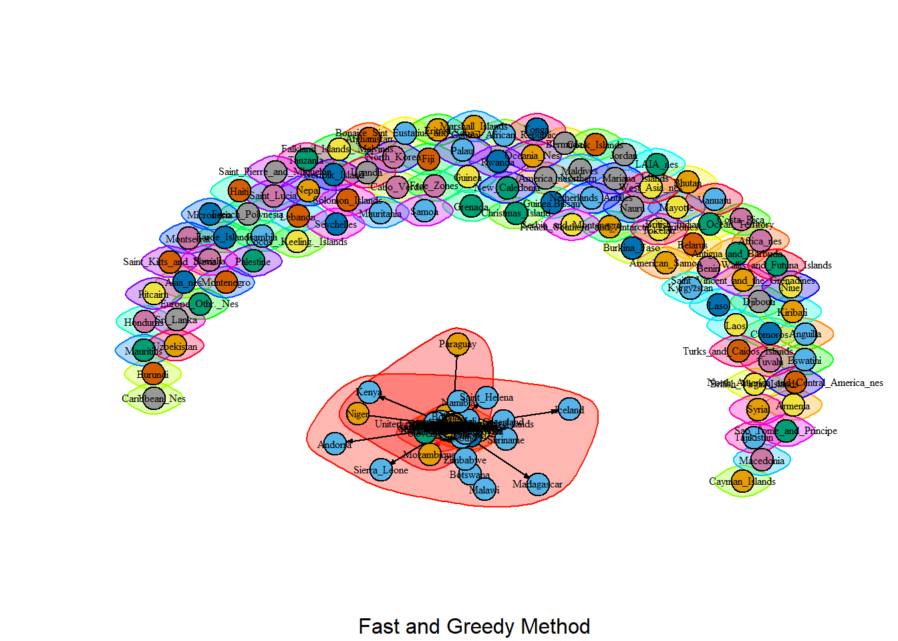
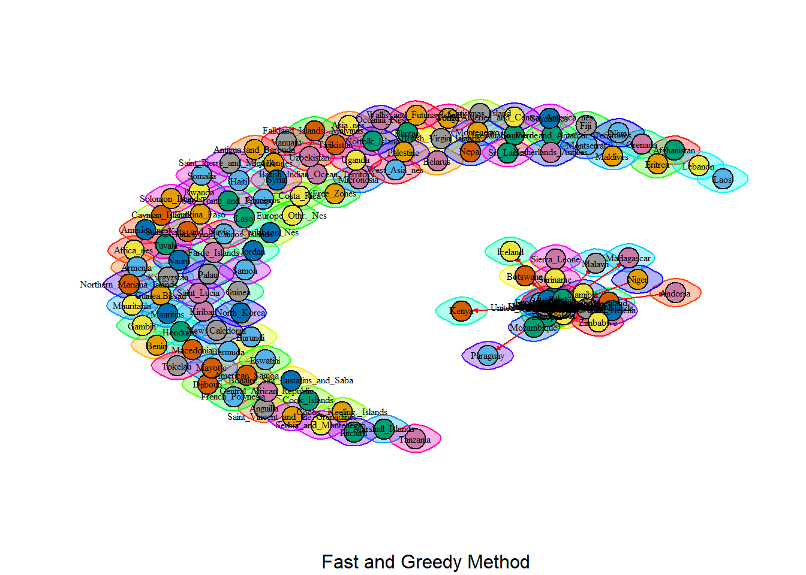

The following objects are masked from 'package:stats':
decompose, spectrum
The following object is masked from 'package:base':
union
Code
library(network)
Warning: package 'network' was built under R version 4.2.3
'network' 1.18.1 (2023-01-24), part of the Statnet Project
* 'news(package="network")' for changes since last version
* 'citation("network")' for citation information
* 'https://statnet.org' for help, support, and other information
Attaching package: 'network'
The following objects are masked from 'package:igraph':
%c%, %s%, add.edges, add.vertices, delete.edges, delete.vertices,
get.edge.attribute, get.edges, get.vertex.attribute, is.bipartite,
is.directed, list.edge.attributes, list.vertex.attributes,
set.edge.attribute, set.vertex.attribute
Code
library(dplyr)
Attaching package: 'dplyr'
The following objects are masked from 'package:igraph':
as_data_frame, groups, union
The following objects are masked from 'package:stats':
filter, lag
The following objects are masked from 'package:base':
intersect, setdiff, setequal, union
Introduction
The crude oil international trade network dataset downloaded from the ITC website for the year 2022 is a matrix-format dataset capturing the import and export activities of crude oil between countries. The data is directed, representing the flow of crude oil from exporting to importing countries, and it is weighted, with the unit value expressed in 1000 dollars. This dataset provides valuable insights into the global crude oil trade dynamics, allowing for the identification of major importers, exporters, trade imbalances, and potential trade relationships. By analyzing the matrix, it is possible to gain a comprehensive understanding of the magnitude and patterns of crude oil trade on an international scale, aiding in strategic decision-making and market analysis within the crude oil industry.
Node Count: The network consists of 241 nodes or countries. These nodes represent the entities involved in the crude international trade.
Edge Count: The network has 917 edges, which represent the connections or relationships between the countries in terms of crude international trade. Each edge represents a trade relationship between two countries.
is_bipartite: The network is determined to be not bipartite. A bipartite network is one where the nodes can be divided into two non-overlapping sets, and all edges connect nodes from one set to the other. In this case, the network does not exhibit such a clear division.
is_directed: The network is directed, as indicated by the “TRUE” value. Directed edges mean that the relationships between countries in terms of crude international trade have a specific direction. It implies that the trade flow or influence between countries is not symmetric.
is_weighted: The network is weighted, as indicated by the “TRUE” value. the weights represent value of international trade of crude oil between countries, and the unit is 1000 dollar,
is_connected: The network is determined to be not connected. It implies that there may be some countries that are not directly connected or involved in the crude oil trade network, or there are isolated subnetworks within the overall trade network.
Diameter: The diameter of the network is determined to be 1,750,920. The diameter is a measure of the longest shortest path between any two nodes in the network. In this case, it indicates that the maximum number of steps required to reach any country from any other country in terms of crude international trade is 1,750,920 steps. This value represents the maximum distance or connectivity in the network.
Average Path Length: The average path length of the network is calculated to be 68,350.95. The average path length is the average number of steps required to reach any country from any other country in the network. It provides an overall measure of the network’s connectivity and how efficiently information or trade flows between countries.
Components: The components object contains three elements: membership, csize, and no. The membership element assigns each node (country) to a specific component. The csize element specifies the size of each component, and the no element indicates the number of components in the network.
Number of Components: There is only one component in the network, as indicated by the value 1 in the num_components variable. This means that all countries in the network are connected in some way, either directly or indirectly through other countries, forming a single connected component.
Component Sizes: The component_sizes variable contains a vector that indicates the size of each component. In this case, all components have a size of 1, except for one component that has a size of 146. This implies that the majority of countries are part of a single large connected component, while the remaining countries form isolated components of size 1.
Giant Component Proportion: The giant_component_proportion variable represents the proportion of nodes in the giant component, which is the largest connected component in the network. The result is approximately 0.6058091, indicating that around 60.58% of the nodes are part of the giant component.
Singleton Proportion: The singleton_proportion variable represents the proportion of unconnected nodes or singletons in the network. The result is approximately 0.3941909, indicating that around 39.42% of the nodes in the network are not connected to any other node.
The vertex attribute names in the network are:
“name”: This attribute represents the name or label of each vertex in the network. It likely corresponds to the names of the countries involved in the crude international trade.
“in_weight”: This attribute represents the weight or quantitative measure associated with the incoming edges of each vertex. It likely indicates the amount of crude oil received by each country from other countries.
“out_weight”: This attribute represents the weight or quantitative measure associated with the outgoing edges of each vertex. It likely indicates the amount of crude oil exported by each country to other countries.
The edge attribute for the network is “weight”, as indicated by the result, which is value of trade with per unit value of $1000.
Minimum Edge Weight: The minimum edge weight in the network is 1. This represents the lowest value among all the edge weights in the crude international trade network.
Mean Edge Weight: The mean edge weight in the network is approximately 1,584,591, with per unit value of $1000.
Median Edge Weight: The median edge weight in the network is approximately 113,854, with per unit value of $1000.
Density: The density of the network is approximately 0.01585408. Density is a measure of how interconnected the network is. It represents the proportion of edges present in the network compared to the maximum possible number of edges. 0.01585408 suggests low density network.
Code
# Number of vertices in network:cat("Node Count: \n")
Node Count:
Code
nodes =vcount(ig.net)print(nodes)
[1] 241
Code
# Number of edges in network:cat("Edge Count: \n")
Edge Count:
Code
ecount(ig.net)
[1] 917
Code
# Bipartite or single mode network verification in network:cat("is_bipartite: \n")
is_bipartite:
Code
is_bipartite(ig.net)
[1] FALSE
Code
# Directed or undirected edges verification in networkcat("is_directed: \n")
is_directed:
Code
print(is_directed(ig.net))
[1] TRUE
Code
# Weighted or unweighted edges verification in networkcat("is_weighted \n")
is_weighted
Code
print(is_weighted(ig.net))
[1] TRUE
Code
# Is Connected verification in networkcat("is_connected: \n")
is_connected:
Code
print(is_connected(ig.net))
[1] FALSE
Code
# Calculate the diameter of the networkcat("diameter \n")
diameter
Code
diameter <-diameter(ig.net)print(diameter)
[1] 1750920
Code
# Calculate the average path lengthcat("average_path_length: \n")
# maximum weight of the edges in network:cat("Max Edge Weight \n")
Max Edge Weight
Code
print(max(E(ig.net)$weight))
[1] 117856834
Code
# minimum weight of the edges in network:cat("MIn Edge Weight \n")
MIn Edge Weight
Code
print(min(E(ig.net)$weight))
[1] 1
Code
# mean & median weight of the edges in network:cat("Mean Edge Weight \n" )
Mean Edge Weight
Code
print(mean(E(ig.net)$weight))
[1] 1584591
Code
cat("Median Edge Weight \n")
Median Edge Weight
Code
print(median(E(ig.net)$weight))
[1] 113854
Code
# densitycat("Density \n")
Density
Code
print(igraph::edge_density(ig.net))
[1] 0.01585408
Diad and Triad
Dyad Census:
Mutual Ties (dyads with reciprocal relationships): There are 102 mutual ties in the network. Mutual ties occur when two countries have a two-way trade relationship.
Asymmetric Ties (dyads with non-reciprocal relationships): There are 713 asymmetric ties in the network. Asymmetric ties occur when the trade relationship between two countries is one-sided or unbalanced.
Null Ties (dyads with no relationship): There are 28,105 null ties in the network. Null ties represent dyads where there is no trade relationship between the two countries.
Triad Census:
212,8251 triads have the configuration of three vertices connected by three edges.
140,157 triads have the configuration of three vertices connected by two edges and one missing edge.
18,691 triads have the configuration of three vertices connected by one edge and two missing edges.
2,871 triads have the configuration of three vertices connected by one edge and one missing edge.
5,386 triads have the configuration of three vertices connected by two missing edges.
2,693 triads have the configuration of three vertices connected by one missing edge.
2,138 triads have the configuration of three vertices with all missing edges.
1,129 triads have the configuration of three vertices connected by one edge and two missing edges.
962 triads have the configuration of three vertices connected by all missing edges.
15 triads have the configuration of three vertices with no connections.
429 triads have the configuration of three vertices connected by three missing edges.
717 triads have the configuration of three vertices connected by two edges and one missing edge.
140 triads have the configuration of three vertices connected by one edge and two missing edges.
106 triads have the configuration of three vertices connected by all missing edges.
226 triads have the configuration of three vertices connected by one edge and one missing edge.
Degree: The degree centrality values reveal the level of connectivity and influence of each country in the global network. With a degree centrality of 93, the Netherlands stands out as an exceptionally connected and influential country, followed closely by the United States of America with a centrality of 84. Spain holds a centrality of 62, positioning it as a significant player in the network. The United Kingdom, China, France, Italy, Malaysia, Singapore, and Germany also exhibit notable degrees of connectivity. These centrality values indicate the extensive connections and influence that these countries possess in the global arena, highlighting their roles in shaping international relations, trade, and cooperation.
In-Degree: The Netherlands leads the pack with an in-degree value of 63, showcasing its extensive network of international relationships. China follows closely with a score of 48, reflecting its position as a major global power. Spain holds a significant in-degree value of 40, highlighting its importance as a cultural and economic hub. The United States of America and France both have an in-degree value of 40, underscoring their global leadership and diplomatic ties. Italy, Singapore, and Thailand each possess an in-degree value of 35, emphasizing their economic and strategic significance. Germany and South Korea round out the top countries with in-degree values of 34, demonstrating their influence in global affairs. These countries play pivotal roles in shaping politics, economics, and cultural exchange on the international stage.
Out-Degree: The out-degree centrality values provide insights into the number of connections each country has with other countries in terms of outgoing connections. In this context, the United States of America leads with an out-degree centrality of 44, indicating a high number of outgoing connections. The Netherlands and Russia follow closely with centrality values of 30 each. The United Kingdom, Brazil, and Nigeria demonstrate significant outgoing connectivity with centrality values of 28, 27, and 26, respectively. Other countries such as Norway, Saudi Arabia, Kazakhstan, Algeria, Angola, Spain, Azerbaijan, South Africa, Libya, France, Iraq, Italy, United Arab Emirates, and Colombia also exhibit notable levels of outgoing connections. These out-degree centrality values shed light on the countries that are actively engaged in forging relationships and initiating interactions with other nations on a global scale.
Betweenness Centrality: The betweenness centrality values highlight the countries that act as pivotal intermediaries, facilitating connections and information flow within the network. The Netherlands emerges as a key player with the highest betweenness centrality of 7959.8333, followed by the United States of America at 3970.1667. Switzerland also demonstrates significant centrality at 3959.5000. Other countries such as South Africa, United Kingdom, Singapore, Italy, France, South Korea, Japan, and Spain play important roles in bridging different regions of the network. Brazil, Australia, Poland, China, Luxembourg, Colombia, Germany, and Belgium contribute as well to the network’s connectivity. These betweenness centrality values provide insights into the countries that serve as critical hubs in facilitating communication and interactions among nations in the global network.
Eigenvector Centrality: The eigenvector centrality values provide insights into the influence and importance of countries within the network, based on their connections with other influential countries. The United States of America holds the highest eigenvector centrality score of 1.00000000, indicating its strong influence and widespread connections with other countries. Canada and China also demonstrate significant centrality scores of 0.88354839 and 0.67162649, respectively. Saudi Arabia, Russia, South Korea, Iraq, United Arab Emirates, and Japan also exhibit considerable eigenvector centrality values, highlighting their influence within the network. Netherlands, Brazil, Kuwait, Mexico, Malaysia, United Kingdom, Angola, Germany, Singapore, and Taipei Chinese contribute to the network’s connectivity and influence as well. These eigenvector centrality values shed light on the countries that hold prominent positions and have the potential to exert substantial influence within the global network.
Closeness Centrality: Closeness centrality measures how quickly information can spread from a particular country to others in the network, based on the average shortest path distance. Barbados holds the highest closeness centrality score of 7.487832e-05, indicating that it has the shortest average distance to reach other countries. Israel, Hong Kong, and India also demonstrate relatively high closeness centrality scores, suggesting their accessibility and efficient information flow within the network. Malaysia, Turkey, Singapore, and New Zealand exhibit comparable closeness centrality values, indicating their proximity to other countries in terms of information exchange. Spain, Ecuador, France, China, Cuba, Kuwait, Mongolia, Niger, Trinidad and Tobago, Italy, Japan, and Netherlands also contribute to the network’s overall closeness, enabling efficient communication and information diffusion. These closeness centrality values highlight the countries that are well-connected and play a crucial role in the network’s information flow dynamics.
Constraint centrality: measures the extent to which a country serves as a bridge or bottleneck in the network, based on the number of shortest paths that pass through it. Slovakia has the highest constraint centrality score of 1.005663, indicating its crucial role in connecting other countries within the network. The Dominican Republic, Luxembourg, and Andorra also exhibit high constraint centrality values, suggesting their significance in controlling the flow of information or trade between various countries. Aruba, Bangladesh, Barbados, Belize, Bolivia, Botswana, Cambodia, Curacao, Dominica, El Salvador, European Union (EU) countries, Greenland, Iceland, Iran, Kenya, and Lesotho demonstrate constraint centrality scores of 1.000000, signifying their potential influence as intermediaries or constraints in the network. These countries are likely to play important roles in regulating the exchange of goods, information, or other resources among other nations in the network.
Analysis:
The analysis of the crude oil network highlights the significance of different countries based on various centrality measures. The Netherlands emerges as a highly connected and influential country, followed closely by the United States of America, Spain, and other key players such as the United Kingdom, China, France, and Germany. These countries demonstrate extensive connections, leadership, and active engagement in shaping international relations and trade within the crude oil network. Furthermore, the Netherlands and the United States of America serve as pivotal intermediaries, facilitating connections and information flow, while countries like Slovakia, the Dominican Republic, and Luxembourg play crucial roles in connecting other nations and controlling the flow of information. Overall, this analysis provides valuable insights into the importance of countries in the crude oil network, shedding light on their connectivity, influence, bridging capabilities, and potential control over the exchange of resources.
# plot fast and greedy#png(filename = "fg_comms.png") # save as pngplot(community_fast, ig.net, vertex.shape ="circle", vertex.size =7, vertex.label.cex = .5, vertex.label.color ="black", edge.arrow.size = .25, rescale =TRUE, asp =0, sub ="Fast and Greedy Method")

Code
#cluster_walktrapcommunity_walktrap <-walktrap.community(as.undirected(ig.net))# get groupsigraph::groups(community_walktrap)
plot(community_walktrap, ig.net, vertex.shape ="circle", vertex.size =7, vertex.label.cex = .5, vertex.label.color ="black", edge.arrow.size = .25, rescale =TRUE, asp =0, sub ="Fast and Greedy Method")

Walktrap: Walktrap is a community detection algorithm based on random walks within a graph. It tends to generate a single big cluster when applied to a dataset. This can be beneficial if the goal is to identify a cohesive group or a global pattern within the crude oil trade data. By identifying a single cluster, Walktrap may help uncover overall trends, relationships, or dynamics in the market.
Fast Greedy: Fast greedy is a hierarchical clustering algorithm that builds clusters by iteratively merging the most similar nodes or clusters. It tends to generate multiple clusters, typically 3-4 major ones in your case. This approach is useful it is required identify distinct subgroups or segments within the crude oil trade market. It allows for a more granular analysis and can reveal different trading patterns, regional differences, or market segments.
Source Code
---title: "Interpretive Assignment "author: "Akhilesh Kumar"description: "Interpretive Assignment"date: "05/25/2023"format: html: toc: true code-fold: true code-copy: true code-tools: truecategories: - Interpretive Assignment---```{r}library(igraph)library(network)library(dplyr)```# IntroductionThe crude oil international trade network dataset downloaded from the ITC website for the year 2022 is a matrix-format dataset capturing the import and export activities of crude oil between countries. The data is directed, representing the flow of crude oil from exporting to importing countries, and it is weighted, with the unit value expressed in 1000 dollars. This dataset provides valuable insights into the global crude oil trade dynamics, allowing for the identification of major importers, exporters, trade imbalances, and potential trade relationships. By analyzing the matrix, it is possible to gain a comprehensive understanding of the magnitude and patterns of crude oil trade on an international scale, aiding in strategic decision-making and market analysis within the crude oil industry.# Read Data```{r} data <-read.csv("C:/social network project/project data/2709/Merged/2022.csv", header =TRUE, row.names =1)adjacency_matrix <-as.matrix(data)ig.net <- igraph::graph_from_adjacency_matrix(adjacency_matrix, mode ="directed", weighted =TRUE, diag =FALSE)```# Network AttributeNode Count: The network consists of 241 nodes or countries. These nodes represent the entities involved in the crude international trade.Edge Count: The network has 917 edges, which represent the connections or relationships between the countries in terms of crude international trade. Each edge represents a trade relationship between two countries.is_bipartite: The network is determined to be not bipartite. A bipartite network is one where the nodes can be divided into two non-overlapping sets, and all edges connect nodes from one set to the other. In this case, the network does not exhibit such a clear division.is_directed: The network is directed, as indicated by the "TRUE" value. Directed edges mean that the relationships between countries in terms of crude international trade have a specific direction. It implies that the trade flow or influence between countries is not symmetric.is_weighted: The network is weighted, as indicated by the "TRUE" value. the weights represent value of international trade of crude oil between countries, and the unit is 1000 dollar, is_connected: The network is determined to be not connected. It implies that there may be some countries that are not directly connected or involved in the crude oil trade network, or there are isolated subnetworks within the overall trade network.Diameter: The diameter of the network is determined to be 1,750,920. The diameter is a measure of the longest shortest path between any two nodes in the network. In this case, it indicates that the maximum number of steps required to reach any country from any other country in terms of crude international trade is 1,750,920 steps. This value represents the maximum distance or connectivity in the network.Average Path Length: The average path length of the network is calculated to be 68,350.95. The average path length is the average number of steps required to reach any country from any other country in the network. It provides an overall measure of the network's connectivity and how efficiently information or trade flows between countries.Components: The components object contains three elements: membership, csize, and no. The membership element assigns each node (country) to a specific component. The csize element specifies the size of each component, and the no element indicates the number of components in the network.Number of Components: There is only one component in the network, as indicated by the value 1 in the num_components variable. This means that all countries in the network are connected in some way, either directly or indirectly through other countries, forming a single connected component.Component Sizes: The component_sizes variable contains a vector that indicates the size of each component. In this case, all components have a size of 1, except for one component that has a size of 146. This implies that the majority of countries are part of a single large connected component, while the remaining countries form isolated components of size 1.Giant Component Proportion: The giant_component_proportion variable represents the proportion of nodes in the giant component, which is the largest connected component in the network. The result is approximately 0.6058091, indicating that around 60.58% of the nodes are part of the giant component.Singleton Proportion: The singleton_proportion variable represents the proportion of unconnected nodes or singletons in the network. The result is approximately 0.3941909, indicating that around 39.42% of the nodes in the network are not connected to any other node.The vertex attribute names in the network are:- "name": This attribute represents the name or label of each vertex in the network. It likely corresponds to the names of the countries involved in the crude international trade.- "in_weight": This attribute represents the weight or quantitative measure associated with the incoming edges of each vertex. It likely indicates the amount of crude oil received by each country from other countries.- "out_weight": This attribute represents the weight or quantitative measure associated with the outgoing edges of each vertex. It likely indicates the amount of crude oil exported by each country to other countries.The edge attribute for the network is "weight", as indicated by the result, which is value of trade with per unit value of $1000.Minimum Edge Weight: The minimum edge weight in the network is 1. This represents the lowest value among all the edge weights in the crude international trade network.Mean Edge Weight: The mean edge weight in the network is approximately 1,584,591, with per unit value of $1000.Median Edge Weight: The median edge weight in the network is approximately 113,854, with per unit value of $1000.Density: The density of the network is approximately 0.01585408. Density is a measure of how interconnected the network is. It represents the proportion of edges present in the network compared to the maximum possible number of edges. 0.01585408 suggests low density network.```{r}# Number of vertices in network:cat("Node Count: \n") nodes =vcount(ig.net)print(nodes)# Number of edges in network:cat("Edge Count: \n")ecount(ig.net)# Bipartite or single mode network verification in network:cat("is_bipartite: \n")is_bipartite(ig.net)# Directed or undirected edges verification in networkcat("is_directed: \n")print(is_directed(ig.net))# Weighted or unweighted edges verification in networkcat("is_weighted \n")print(is_weighted(ig.net))# Is Connected verification in networkcat("is_connected: \n")print(is_connected(ig.net))# Calculate the diameter of the networkcat("diameter \n") diameter <-diameter(ig.net)print(diameter)# Calculate the average path lengthcat("average_path_length: \n") average_path_length <-average.path.length(ig.net)print(average_path_length)# Calculate the connected componentscat("Components: \n") components <-clusters(ig.net)print(components)cat("Number of Components") num_components <-length(components$no)print(num_components)cat("Component_Size") component_sizes <- components$csizeprint(component_sizes)# Calculate the proportion of nodes in the giant componentcat("giant_component_proportion: \n") giant_component_proportion <-max(components$csize) / nodesprint(giant_component_proportion)# Calculate the proportion of unconnected nodes (singletons)cat("Singlton: \n") singleton_proportion <-sum(components$csize ==1) / nodesprint(singleton_proportion)# Vertex attributes for networkcat("vertex_attr_names: \n")print(vertex_attr_names(ig.net))# Vertex attribute, Nodes in network:cat("Node Names: \n")print(V(ig.net)$name)# Edge attributes for network:cat("Edge Attribute \n")print(edge_attr_names(ig.net))# Edge attribute, Edges with weights in network:cat("Edge Weight \n")print(E(ig.net)$weight)# maximum weight of the edges in network:cat("Max Edge Weight \n")print(max(E(ig.net)$weight))# minimum weight of the edges in network:cat("MIn Edge Weight \n")print(min(E(ig.net)$weight))# mean & median weight of the edges in network:cat("Mean Edge Weight \n" )print(mean(E(ig.net)$weight))cat("Median Edge Weight \n")print(median(E(ig.net)$weight))# densitycat("Density \n")print(igraph::edge_density(ig.net))```# Diad and TriadDyad Census:- Mutual Ties (dyads with reciprocal relationships): There are 102 mutual ties in the network. Mutual ties occur when two countries have a two-way trade relationship.- Asymmetric Ties (dyads with non-reciprocal relationships): There are 713 asymmetric ties in the network. Asymmetric ties occur when the trade relationship between two countries is one-sided or unbalanced.- Null Ties (dyads with no relationship): There are 28,105 null ties in the network. Null ties represent dyads where there is no trade relationship between the two countries.Triad Census:- 212,8251 triads have the configuration of three vertices connected by three edges.- 140,157 triads have the configuration of three vertices connected by two edges and one missing edge.- 18,691 triads have the configuration of three vertices connected by one edge and two missing edges.- 2,871 triads have the configuration of three vertices connected by one edge and one missing edge.- 5,386 triads have the configuration of three vertices connected by two missing edges.- 2,693 triads have the configuration of three vertices connected by one missing edge.- 2,138 triads have the configuration of three vertices with all missing edges.- 1,129 triads have the configuration of three vertices connected by one edge and two missing edges.- 962 triads have the configuration of three vertices connected by all missing edges.- 15 triads have the configuration of three vertices with no connections.- 429 triads have the configuration of three vertices connected by three missing edges.- 717 triads have the configuration of three vertices connected by two edges and one missing edge.- 140 triads have the configuration of three vertices connected by one edge and two missing edges.- 106 triads have the configuration of three vertices connected by all missing edges.- 226 triads have the configuration of three vertices connected by one edge and one missing edge.```{r}dyad_census(ig.net)triad.census(ig.net)```# Network Attributes (2)Degree: The degree centrality values reveal the level of connectivity and influence of each country in the global network. With a degree centrality of 93, the Netherlands stands out as an exceptionally connected and influential country, followed closely by the United States of America with a centrality of 84. Spain holds a centrality of 62, positioning it as a significant player in the network. The United Kingdom, China, France, Italy, Malaysia, Singapore, and Germany also exhibit notable degrees of connectivity. These centrality values indicate the extensive connections and influence that these countries possess in the global arena, highlighting their roles in shaping international relations, trade, and cooperation.In-Degree: The Netherlands leads the pack with an in-degree value of 63, showcasing its extensive network of international relationships. China follows closely with a score of 48, reflecting its position as a major global power. Spain holds a significant in-degree value of 40, highlighting its importance as a cultural and economic hub. The United States of America and France both have an in-degree value of 40, underscoring their global leadership and diplomatic ties. Italy, Singapore, and Thailand each possess an in-degree value of 35, emphasizing their economic and strategic significance. Germany and South Korea round out the top countries with in-degree values of 34, demonstrating their influence in global affairs. These countries play pivotal roles in shaping politics, economics, and cultural exchange on the international stage.Out-Degree: The out-degree centrality values provide insights into the number of connections each country has with other countries in terms of outgoing connections. In this context, the United States of America leads with an out-degree centrality of 44, indicating a high number of outgoing connections. The Netherlands and Russia follow closely with centrality values of 30 each. The United Kingdom, Brazil, and Nigeria demonstrate significant outgoing connectivity with centrality values of 28, 27, and 26, respectively. Other countries such as Norway, Saudi Arabia, Kazakhstan, Algeria, Angola, Spain, Azerbaijan, South Africa, Libya, France, Iraq, Italy, United Arab Emirates, and Colombia also exhibit notable levels of outgoing connections. These out-degree centrality values shed light on the countries that are actively engaged in forging relationships and initiating interactions with other nations on a global scale.Betweenness Centrality: The betweenness centrality values highlight the countries that act as pivotal intermediaries, facilitating connections and information flow within the network. The Netherlands emerges as a key player with the highest betweenness centrality of 7959.8333, followed by the United States of America at 3970.1667. Switzerland also demonstrates significant centrality at 3959.5000. Other countries such as South Africa, United Kingdom, Singapore, Italy, France, South Korea, Japan, and Spain play important roles in bridging different regions of the network. Brazil, Australia, Poland, China, Luxembourg, Colombia, Germany, and Belgium contribute as well to the network's connectivity. These betweenness centrality values provide insights into the countries that serve as critical hubs in facilitating communication and interactions among nations in the global network.Eigenvector Centrality: The eigenvector centrality values provide insights into the influence and importance of countries within the network, based on their connections with other influential countries. The United States of America holds the highest eigenvector centrality score of 1.00000000, indicating its strong influence and widespread connections with other countries. Canada and China also demonstrate significant centrality scores of 0.88354839 and 0.67162649, respectively. Saudi Arabia, Russia, South Korea, Iraq, United Arab Emirates, and Japan also exhibit considerable eigenvector centrality values, highlighting their influence within the network. Netherlands, Brazil, Kuwait, Mexico, Malaysia, United Kingdom, Angola, Germany, Singapore, and Taipei Chinese contribute to the network's connectivity and influence as well. These eigenvector centrality values shed light on the countries that hold prominent positions and have the potential to exert substantial influence within the global network.Closeness Centrality: Closeness centrality measures how quickly information can spread from a particular country to others in the network, based on the average shortest path distance. Barbados holds the highest closeness centrality score of 7.487832e-05, indicating that it has the shortest average distance to reach other countries. Israel, Hong Kong, and India also demonstrate relatively high closeness centrality scores, suggesting their accessibility and efficient information flow within the network. Malaysia, Turkey, Singapore, and New Zealand exhibit comparable closeness centrality values, indicating their proximity to other countries in terms of information exchange. Spain, Ecuador, France, China, Cuba, Kuwait, Mongolia, Niger, Trinidad and Tobago, Italy, Japan, and Netherlands also contribute to the network's overall closeness, enabling efficient communication and information diffusion. These closeness centrality values highlight the countries that are well-connected and play a crucial role in the network's information flow dynamics.Constraint centrality: measures the extent to which a country serves as a bridge or bottleneck in the network, based on the number of shortest paths that pass through it. Slovakia has the highest constraint centrality score of 1.005663, indicating its crucial role in connecting other countries within the network. The Dominican Republic, Luxembourg, and Andorra also exhibit high constraint centrality values, suggesting their significance in controlling the flow of information or trade between various countries. Aruba, Bangladesh, Barbados, Belize, Bolivia, Botswana, Cambodia, Curacao, Dominica, El Salvador, European Union (EU) countries, Greenland, Iceland, Iran, Kenya, and Lesotho demonstrate constraint centrality scores of 1.000000, signifying their potential influence as intermediaries or constraints in the network. These countries are likely to play important roles in regulating the exchange of goods, information, or other resources among other nations in the network.Analysis: The analysis of the crude oil network highlights the significance of different countries based on various centrality measures. The Netherlands emerges as a highly connected and influential country, followed closely by the United States of America, Spain, and other key players such as the United Kingdom, China, France, and Germany. These countries demonstrate extensive connections, leadership, and active engagement in shaping international relations and trade within the crude oil network. Furthermore, the Netherlands and the United States of America serve as pivotal intermediaries, facilitating connections and information flow, while countries like Slovakia, the Dominican Republic, and Luxembourg play crucial roles in connecting other nations and controlling the flow of information. Overall, this analysis provides valuable insights into the importance of countries in the crude oil network, shedding light on their connectivity, influence, bridging capabilities, and potential control over the exchange of resources.```{r}cat("Degree: \n")sort(igraph::degree(ig.net), decreasing =TRUE)[1:20]cat("In Degree: \n")sort(igraph::degree(ig.net, mode ="in"), decreasing =TRUE)[1:20]cat("Out Degree: \n")sort(igraph::degree(ig.net, mode ="out"), decreasing =TRUE)[1:20]cat("Betweenness Centrality: \n")sort(igraph::betweenness(ig.net),decreasing =TRUE)[1:20]cat("Eigenvector Centrality \n")sort(igraph::eigen_centrality(ig.net)$vector,decreasing =TRUE)[1:20]cat("Closeness Centrality \n")sort(igraph::closeness(ig.net),decreasing =TRUE)[1:20]cat("Constraint Centrality: \n")sort(igraph::constraint(ig.net),decreasing =TRUE)[1:20]```# In, Out Trade Volume on Nodes```{r}cat("Trade Volume Import (Strength: \n")V(ig.net)$in_weight <-strength(ig.net, mode ="in", weights =E(ig.net)$attribute)V(ig.net)$in_weightcat("Trade Volume Export (Strength: \n")V(ig.net)$out_weight <-strength(ig.net, mode ="out", weights =E(ig.net)$attribute)V(ig.net)$out_weight```# Community Clusters```{r}# cluster_fast_greedycommunity_fast <-cluster_fast_greedy(as.undirected(ig.net))# get groupsigraph::groups(community_fast)# plot fast and greedy#png(filename = "fg_comms.png") # save as pngplot(community_fast, ig.net, vertex.shape ="circle", vertex.size =7, vertex.label.cex = .5, vertex.label.color ="black", edge.arrow.size = .25, rescale =TRUE, asp =0, sub ="Fast and Greedy Method")#cluster_walktrapcommunity_walktrap <-walktrap.community(as.undirected(ig.net))# get groupsigraph::groups(community_walktrap)plot(community_walktrap, ig.net, vertex.shape ="circle", vertex.size =7, vertex.label.cex = .5, vertex.label.color ="black", edge.arrow.size = .25, rescale =TRUE, asp =0, sub ="Fast and Greedy Method")```Walktrap: Walktrap is a community detection algorithm based on random walks within a graph. It tends to generate a single big cluster when applied to a dataset. This can be beneficial if the goal is to identify a cohesive group or a global pattern within the crude oil trade data. By identifying a single cluster, Walktrap may help uncover overall trends, relationships, or dynamics in the market.Fast Greedy: Fast greedy is a hierarchical clustering algorithm that builds clusters by iteratively merging the most similar nodes or clusters. It tends to generate multiple clusters, typically 3-4 major ones in your case. This approach is useful it is required identify distinct subgroups or segments within the crude oil trade market. It allows for a more granular analysis and can reveal different trading patterns, regional differences, or market segments.